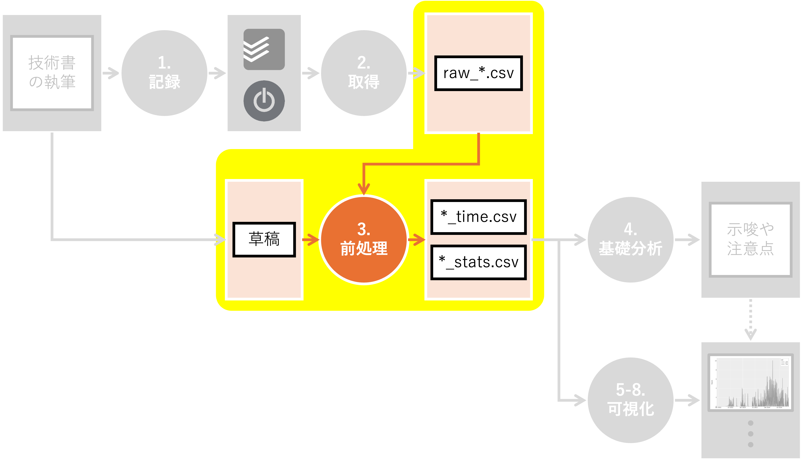

3. 前処理#

Summary
(Todoistのタスク名 ->
category,task)の変換表を作成し、レコードの粒度を揃えたcategoryとして、プロトタイピング、企画立案、原稿執筆、校正校閲、そして販促を設定した草稿は直接可視化対象とせず、各章の文字数、行数、句読点数、脚注数、などの統計情報を扱う
執筆時間の分析に必要なデータの前処理について説明します。 具体的には、Togglから取得した生のデータを整形し、分析に適した形に加工します。 また、個人的に興味があったため、草稿の集計情報も取得します。
3.1. 環境構築#
前処理を行うために必要なライブラリをインポートし、定数を定義します。 また、データの入出力先となるディレクトリも作成しておきます。
Show code cell content
# JSONデータを扱うためのモジュールをインポート
import json
# ファイルパスを扱うためのPathlibモジュールをインポート
from pathlib import Path
# 型ヒントを定義するためのtypingモジュールから、DictとUnionをインポート
from typing import Dict, Union
# NumPyライブラリをnpという別名でインポート
import numpy as np
# データ処理・分析ライブラリのPandasをインポート
import pandas as pd
Show code cell content
# Togglデータのディレクトリパス
DIR_TOGGL = Path("../../data/tmp/toggl")
# 前処理後のデータを保存するディレクトリパス
DIR_PREP = Path("../../data/tmp/prep")
# 原稿データのディレクトリパス
DIR_DRAFT = Path("../../data/input")
# 最終的な出力データを保存するディレクトリパス
DIR_OUT = Path("../../data/tmp")
Show code cell content
# 出力先ディレクトリを作成
# exist_ok=Trueで、ディレクトリが既に存在する場合にエラーを発生させない
# parents=Trueで、必要な親ディレクトリも同時に作成
DIR_PREP.mkdir(exist_ok=True, parents=True)
DIR_OUT.mkdir(exist_ok=True, parents=True)
また、jsonファイルの読み書きに関する関数を定義しておきます。
Show code cell content
class NpEncoder(json.JSONEncoder):
"""
numpyのデータ型やPosixPathをJSONエンコードするためのカスタムエンコーダー
numpyのデータ型をPythonの標準型に変換し、その後JSONにエンコード可能な形にする
JSONには直接エンコードできない型もあるため、このようなエンコーダーが必要となる
"""
def default(self, obj):
"""
numpyデータ型を標準のPython型に変換するカスタムメソッド
Parameters
----------
obj : Any
エンコード対象のオブジェクト
Returns
-------
Any
エンコード可能な型に変換されたオブジェクト
"""
if isinstance(obj, np.integer):
return int(obj)
elif isinstance(obj, np.floating):
return float(obj)
elif isinstance(obj, np.ndarray):
return obj.tolist()
elif isinstance(obj, Path):
return str(obj)
return super(NpEncoder, self).default(obj)
def save_json(path: Union[str, Path], dct: Dict) -> None:
"""
辞書をJSON形式でファイルに保存する
辞書を受け取り、指定されたパスにJSON形式で保存する
JSONファイルは人間が読みやすい形式でインデントされる
numpy型はNpEncoderを使用して適切にエンコードされる
Parameters
----------
path : Union[str, Path]
JSONファイルの保存先 文字列またはPathオブジェクト
dct : Dict
保存する辞書
Returns
-------
None
"""
with open(path, "w") as f:
json.dump(dct, f, ensure_ascii=False, indent=4, cls=NpEncoder)
Show code cell content
def read_json(path: Union[str, Path]) -> Dict:
"""
JSONファイルを読み込み、辞書として返す
指定されたパスのJSONファイルを開き、その内容を辞書として読み込む
JSONデータはPythonの辞書型で表される
Parameters
----------
path : Union[str, Path]
読み込み対象のファイルのパス 文字列またはPathオブジェクト
Returns
-------
Dict
ファイルから読み込まれたJSONデータを表す辞書
"""
with open(path, "r") as f:
dct = json.load(f)
return dct
3.2. 執筆時間・睡眠時間の前処理#
まず、Togglから取得した生データを加工し、
執筆時間
睡眠時間
に分けて保存します。
3.2.1. 概要確認#
Togglから取得した執筆時間データの概要を確認します。
まず、raw_*.csvファイルを読み取りましょう。
Show code cell content
# DIR_TOGGL内の"raw_"で始まるファイルのパスを取得し、ソートする
ps_read = sorted(list(DIR_TOGGL.glob("raw_*")))
# ps_readのファイルパスを順にread_csvで読み込み、リストに格納
# リストの要素（DataFrameオブジェクト）をconcatで連結し、一つのDataFrameにまとめる
# ignore_index=Trueで、元のインデックスを無視し、新しいインデックスを付与
df = pd.concat([pd.read_csv(p) for p in ps_read], ignore_index=True)
執筆時間を記録したプロジェクトIDは180059875でした。
どのようなデータが格納されているか、headメソッドを用いて確認してみましょう。
Show code cell content
# dfから該当のプロジェクトIDを持つ行を抽出する
# 抽出したDataFrameのうち、最初の5行を表示する
df[df["project_id"] == 180059875].head()
| project_id | description | date | seconds | row_number | |
|---|---|---|---|---|---|
| 2424 | 180059875 | MADB/マンガと学ぶデータビジュアライゼーション | 2021-12-08 | 1072 | 711 |
| 2425 | 180059875 | MADB/マンガと学ぶデータビジュアライゼーション | 2021-12-08 | 203 | 712 |
| 2426 | 180059875 | MADB/マンガと学ぶデータビジュアライゼーション | 2021-12-08 | 1094 | 713 |
| 2427 | 180059875 | MADB/マンガと学ぶデータビジュアライゼーション | 2021-12-08 | 862 | 714 |
| 2429 | 180059875 | MADB/マンガと学ぶデータビジュアライゼーション | 2021-12-08 | 1582 | 716 |
タスクの詳細を表すdescription列を基準に、作業秒数seconds列を集計してみましょう。
Show code cell content
# project_id 180059875に該当する行を抽出
# 抽出した行を"description"列でグループ化し、"seconds"列の合計を計算
# 計算結果を値で昇順ソートし、reset_index()でインデックスを振り直し
df[df["project_id"] == 180059875].groupby("description")[
"seconds"
].sum().sort_values().reset_index()
| description | seconds | |
|---|---|---|
| 0 | MADBで始めるデータビジュアライゼーション | 4 |
| 1 | 校正・校閲/練習問題/vol2-01最終確認 | 5 |
| 2 | parallel.ipynb | 8 |
| 3 | 校正・校閲/練習問題/下巻3章見直し | 11 |
| 4 | 校正・校閲/練習問題/下巻4章見直し | 12 |
| ... | ... | ... |
| 394 | Web/執筆時間分析 | 264647 |
| 395 | 8章/変数間の関係を見たい | 265904 |
| 396 | 9章/メディア展開分析 | 316937 |
| 397 | 1章/データビジュアライゼーションとは | 412535 |
| 398 | 2章/マンガデータによるハンズオン | 510543 |
399 rows × 2 columns
description列は粒度が揃っていないようです。
章別にまとまっているものもあれば、非常に細かいものもあります。
このまま可視化に用いるのは筋が良いとは思えません。
そこで、description列に代わるタスク情報を
手作業で
追加することにしましょう。
効率的に作業を進めるため、description別の統計情報を整理します。
Show code cell content
# "description"列でグループ化し、各グループの"date"列の最大・最小値を取得
# 結果を辞書形式で保存: キーは"description"、値は最大・最小の"date"
desc2fdate = df.groupby("description")["date"].min().to_dict()
desc2ldate = df.groupby("description")["date"].max().to_dict()
# "description"列でグループ化し、各グループの"seconds"列の合計を計算
# 結果を"seconds"列の値で昇順にソート
# reset_index()でインデックスを振り直し、新しいDataFrameを作成
df_tmp = df.groupby("description")["seconds"].sum().sort_values().reset_index()
# desc2fdateを用いて、"description"列に対応する最小の"date"を取得
# 結果を"first_date"列として追加
df_tmp["first_date"] = df_tmp["description"].map(desc2fdate)
# desc2ldateを用いて、"description"列に対応する最大の"date"を取得
# 結果を"last_date"列として追加
df_tmp["last_date"] = df_tmp["description"].map(desc2ldate)
作成したデータフレームを確認してみましょう。
Show code cell content
# 作成したDataFrameの概要を確認
df_tmp.head()
| description | seconds | first_date | last_date | |
|---|---|---|---|---|
| 0 | MADBで始めるデータビジュアライゼーション | 4 | 2022-01-06 | 2022-01-06 |
| 1 | 校正・校閲/練習問題/vol2-01最終確認 | 5 | 2026-01-21 | 2026-01-21 |
| 2 | parallel.ipynb | 8 | 2023-07-29 | 2023-07-29 |
| 3 | 校正・校閲/練習問題/下巻3章見直し | 11 | 2026-01-17 | 2026-01-17 |
| 4 | 校正・校閲/練習問題/下巻4章見直し | 12 | 2026-01-17 | 2026-01-17 |
ここで作成したdf_tmpは、description別の集計情報：
seconds：合計秒数first_date：最初の作業日last_date：最後の作業日
を格納したデータフレームです。
この集計情報を頼りに、description列に関する追加情報を手作業で追記していきます。
Show code cell content
# df_tmpをExcelファイルとして保存
# 保存先のパスは、DIR_PREPディレクトリ内の"tasks_before.xlsx"
# index=Falseで、DataFrameのインデックスを保存しない
df_tmp.to_excel(DIR_PREP / "tasks_before.xlsx", index=False)
3.2.2. タスクの粒度調整と分類#
ここまでの分析により、執筆時間データのdescription列の粒度が揃っていないという課題が明らかになりました。
そこで、description、seconds、first_date、last_dateをヒントに、タスクの概要を表すtask列と、タスクの分類を表すcategory列を
手作業で
追加します：
task：descriptionでは粒度が揃っていないため、タスクの概要を清書category：taskの分類を記載。ここでは大きく以下で分類プロトタイピング：本書の前身であるマンガと学ぶデータビジュアライゼーションのサイト設計・実装から公開までの一連の作業企画立案：技術評論社へ本書企画を持ち込んでから、章・節・項レベルの目次確定と本書全体のコンセプト詰めまでの作業原稿執筆：本書の原稿執筆に直接関わる一連の作業。データ準備や可視化[1]、草稿の執筆と提出など校正校閲：草稿の脱稿後、編集者と内容・構成・文章表現などを見直し、改善点の指摘・修正を行う作業販促：本書の販売を促進するための作業。練習問題の作成、SNSでの告知[2]など睡眠：参考情報として、執筆期間中の睡眠時間を集計するためのカテゴリ
tasks_before.xlsxをコピーしたtasks.xlsxファイルを作成[3]し、以下のように一つ一つ手作業で追記します。

最終的には、以下のようなtasks.xlsxを作成しました。
Show code cell content
# 前処理済みのタスクデータ（tasks.xlsx）をDataFrameとして読み込む
# DIR_PREPディレクトリ内の"tasks.xlsx"ファイルを指定
df_tasks = pd.read_excel(DIR_PREP / "tasks.xlsx")
# df_tasksの最初の5行を表示
df_tasks.head()
| description | seconds | first_date | last_date | category | task | 補足説明 | checked | |
|---|---|---|---|---|---|---|---|---|
| 0 | MADBで始めるデータビジュアライゼーション | 4 | 2022-01-06 | 2022-01-06 | プロトタイピング | プロトタイピング | プロトタイピング | 1 |
| 1 | 校正・校閲/PDF確認/下巻-Phase3/ファイル構成・ページ数確認 | 14 | 2025-12-04 | 2025-12-04 | 校正校閲 | PDF確認 | NaN | 1 |
| 2 | parallel.ipynb | 8 | 2023-07-29 | 2023-07-29 | 原稿執筆 | その他執筆 | その他執筆 | 1 |
| 3 | 校正・校閲/PDF確認/下巻-Phase5/索引候補確認 | 19 | 2025-12-20 | 2025-12-20 | 校正校閲 | PDF確認 | NaN | 1 |
| 4 | 校正・校閲/PDF確認/下巻-第2章/空きスペース処理 | 20 | 2025-12-04 | 2025-12-04 | 校正校閲 | PDF確認 | NaN | 1 |
これに基づき、descpriptionをtaskとcategoryに変換する辞書を作成します。
Show code cell content
# df_tasksを"description"列でグループ化し、各グループの最初の"task"の値を取得
# to_dict()を使って、"description"をキー、対応する"task"を値とする辞書に変換
desc2task = df_tasks.groupby("description")["task"].first().to_dict()
# df_tasksを"description"列でグループ化し、各グループの最初の"category"の値を取得
# to_dict()を使って、"description"をキー、対応する"category"を値とする辞書に変換
desc2cat = df_tasks.groupby("description")["category"].first().to_dict()
desc2taskは以下のような形状の辞書です：
{
'#11 2章の問題設定を大学生に変更': 'その他執筆',
'0章/はじめに': '上巻0章執筆',
'10章/あとがき': 'その他執筆',
'10章/メディアミックス分析': '下巻5-6章執筆',
'11章/あとがき': 'その他執筆',
...
}
念の為、一度保存しておきます。
Show code cell content
# desc2task辞書をJSONファイルとして保存
# 保存先のパスは、DIR_PREPディレクトリ内の"desc2task.json"
save_json(DIR_PREP / "desc2task.json", desc2task)
# desc2cat辞書をJSONファイルとして保存
# 保存先のパスは、DIR_PREPディレクトリ内の"desc2cat.json"
save_json(DIR_PREP / "desc2cat.json", desc2cat)
3.2.3. データの加工#
先ほど作成したdesc2task.jsonとdesc2cat.jsonを用いて、task列とcategory列を追加しましょう。
まず、作業対象となる元データ（raw_*.csv）等を読み込みます。
Show code cell content
# DIR_TOGGL内の"raw_"で始まるファイルのパスを取得し、ソートする
ps_read = sorted(list(DIR_TOGGL.glob("raw_*")))
# ps_readのファイルパスを順にread_csvで読み込み、リストに格納
# リストの要素（DataFrameオブジェクト）をconcatで連結し、一つのDataFrameにまとめる
# ignore_index=Trueで、元のインデックスを無視し、新しいインデックスを付与
df = pd.concat([pd.read_csv(p) for p in ps_read], ignore_index=True)
# DIR_PREP内の"desc2cat.json"ファイルを読み込み、辞書として取得
desc2cat = read_json(DIR_PREP / "desc2cat.json")
# DIR_PREP内の"desc2task.json"ファイルを読み込み、辞書として取得
desc2task = read_json(DIR_PREP / "desc2task.json")
本書執筆用プロジェクトに関するデータのうち、先頭5行を確認してみましょう。
Show code cell content
# プロジェクトIDが180059875に該当するものを抽出し
# 先頭5行のレコードを表示
df[df["project_id"] == 180059875].head()
| project_id | description | date | seconds | row_number | |
|---|---|---|---|---|---|
| 2424 | 180059875 | MADB/マンガと学ぶデータビジュアライゼーション | 2021-12-08 | 1072 | 711 |
| 2425 | 180059875 | MADB/マンガと学ぶデータビジュアライゼーション | 2021-12-08 | 203 | 712 |
| 2426 | 180059875 | MADB/マンガと学ぶデータビジュアライゼーション | 2021-12-08 | 1094 | 713 |
| 2427 | 180059875 | MADB/マンガと学ぶデータビジュアライゼーション | 2021-12-08 | 862 | 714 |
| 2429 | 180059875 | MADB/マンガと学ぶデータビジュアライゼーション | 2021-12-08 | 1582 | 716 |
descriptionに基づき、category列とtask列を追加します。
Show code cell content
# desc2cat辞書を使って、dfの"description"列を"category"列にマッピング
# "description"列の各値をキーとして、desc2catから対応する"category"の値を取得
df["category"] = df["description"].map(desc2cat)
# desc2task辞書を使って、dfの"description"列を"task"列にマッピング
# "description"列の各値をキーとして、desc2taskから対応する"task"の値を取得
df["task"] = df["description"].map(desc2task)
追加結果を見てみましょう。
Show code cell content
# プロジェクトIDが180059875に該当するものを抽出し
# 先頭5行のレコードを表示
df[df["project_id"] == 180059875].head()
| project_id | description | date | seconds | row_number | category | task | |
|---|---|---|---|---|---|---|---|
| 2424 | 180059875 | MADB/マンガと学ぶデータビジュアライゼーション | 2021-12-08 | 1072 | 711 | プロトタイピング | プロトタイピング |
| 2425 | 180059875 | MADB/マンガと学ぶデータビジュアライゼーション | 2021-12-08 | 203 | 712 | プロトタイピング | プロトタイピング |
| 2426 | 180059875 | MADB/マンガと学ぶデータビジュアライゼーション | 2021-12-08 | 1094 | 713 | プロトタイピング | プロトタイピング |
| 2427 | 180059875 | MADB/マンガと学ぶデータビジュアライゼーション | 2021-12-08 | 862 | 714 | プロトタイピング | プロトタイピング |
| 2429 | 180059875 | MADB/マンガと学ぶデータビジュアライゼーション | 2021-12-08 | 1582 | 716 | プロトタイピング | プロトタイピング |
想定通り、category列とtask列が追加されていました。
今後分析する際に便利ですから、執筆時間と睡眠時間でファイルを分けて保存しましょう。 このとき、不要な列と行も削除しておきます。
Show code cell content
# "date", "seconds", "category", "task"の列を選択して新しいデータフレームを作成
df_revised = df[["date", "seconds", "category", "task"]]
# "task"列の値が"（除外）"でない行のみを抽出し、インデックスを振り直す
df_revised = df_revised[df_revised["task"] != "（除外）"].reset_index(drop=True)
# "category"列の値が"睡眠"でない行を抽出し、df_writingに代入
# df_writingは執筆時間のデータを表す
df_writing = df_revised[df_revised["category"] != "睡眠"].reset_index(drop=True)
# "category"列の値が"睡眠"である行を抽出し、df_sleepingに代入
# df_sleepingは睡眠時間のデータを表す
df_sleeping = df_revised[df_revised["category"] == "睡眠"].reset_index(drop=True)
後段の分析内容を考慮し、睡眠時間に関しては一日ごとの総和を保存します。
徹夜している日もある
ため、date_rangeで期間内の全日付を列挙し、該当するレコードが存在しない場合は0埋めします。
Show code cell content
# df_sleepingを"date", "category", "task"列でグループ化し、"seconds"列の合計を計算
# reset_index()でグループ化を解除し、新しいデータフレームを作成
df_sleeping = (
df_sleeping.groupby(["date", "category", "task"])["seconds"].sum().reset_index()
)
# "date"列をdatetime型に変換
df_sleeping["date"] = pd.to_datetime(df_sleeping["date"])
# df_sleepingの"date"列から最も古い日付と最も新しい日付を取得
min_date = df_sleeping["date"].min()
max_date = df_sleeping["date"].max()
# min_dateからmax_dateまでの日付範囲を作成（freq="D"で1日ごと）
date_range = pd.date_range(start=min_date, end=max_date, freq="D")
# 日付範囲をデータフレームに変換
df_date_range = pd.DataFrame({"date": date_range})
# df_date_rangeとdf_sleepingを"date"列で外部結合（how="left"）
# 結合後、"category", "task", "seconds"列の欠損値を処理
# 欠損値は、それぞれ"睡眠", "睡眠", 0で埋める（徹夜を表す）
df_sleeping = pd.merge(df_date_range, df_sleeping, on="date", how="left")
df_sleeping["category"] = df_sleeping["category"].fillna("睡眠")
df_sleeping["task"] = df_sleeping["task"].fillna("睡眠")
df_sleeping["seconds"] = df_sleeping["seconds"].fillna(0)
執筆時間を格納したdf_writingの中身を見てみましょう。
Show code cell content
# 執筆時間を格納したデータフレームの先頭5行を確認
df_writing.head()
| date | seconds | category | task | |
|---|---|---|---|---|
| 0 | 2021-12-08 | 1072 | プロトタイピング | プロトタイピング |
| 1 | 2021-12-08 | 203 | プロトタイピング | プロトタイピング |
| 2 | 2021-12-08 | 1094 | プロトタイピング | プロトタイピング |
| 3 | 2021-12-08 | 862 | プロトタイピング | プロトタイピング |
| 4 | 2021-12-08 | 1582 | プロトタイピング | プロトタイピング |
睡眠時間を格納したdf_sleepingの中身を見てみましょう。
Show code cell content
# 睡眠時間を格納したデータフレームの先頭5行を確認
df_sleeping.head()
| date | category | task | seconds | |
|---|---|---|---|---|
| 0 | 2019-02-23 | 睡眠 | 睡眠 | 24241.0 |
| 1 | 2019-02-24 | 睡眠 | 睡眠 | 21131.0 |
| 2 | 2019-02-25 | 睡眠 | 睡眠 | 17259.0 |
| 3 | 2019-02-26 | 睡眠 | 睡眠 | 21990.0 |
| 4 | 2019-02-27 | 睡眠 | 睡眠 | 22461.0 |
問題無さそうなので、DIR_OUT以下に保存します。
Show code cell content
# df_writingおよびdf_sleepingをDIR_OUT以下に保存
df_writing.to_csv(DIR_OUT / "writing_time.csv", index=False)
df_sleeping.to_csv(DIR_OUT / "sleeping_time.csv", index=False)
3.3. 草稿の前処理#
ここでは、各章の 草稿 [4] の文字列を集計し、分析の補助情報として用いる準備をします。
本書は技術評論社の独自ルールに従うmd形式で執筆されました。
例えば、
** **：太字</fn><fn>：脚注：図``` ```：コードブロック
のようなものです。 これらの情報も集計すると、各章の特徴を解釈しやすくなるかもしれません。
3.3.1. 概要確認#
まず、草稿のディレクトリ構造をtreeコマンドで確認します。
../../data/input
├── vol1
│ ├── 00.md
│ ├── 01.md
│ ├── 02.md
│ ├── 03.md
│ ├── 04.md
│ ├── 05.md
│ ├── 06.md
│ └── 07.md
└── vol2
├── 00.md
├── 01.md
├── 02.md
├── 03.md
├── 04.md
├── 05.md
├── 06.md
└── appendix.md
vol1は上巻、vol2は下巻に対応しています。
00.mdはそれぞれ前付けです。
それ以外は、基本的に章ごとにファイルを分けて管理してあります。
処理しやすいよう、該当するファイルのパスを取得します。
Show code cell content
# DIR_DRAFT内のすべてのサブディレクトリ内の.mdファイルのパスを取得し、ソートする
# list()で、glob()が返すジェネレータをリストに変換していることに注意
ps_draft = sorted(list(DIR_DRAFT.glob("*/*.md")))
Show code cell content
# パス一覧を確認
ps_draft
[PosixPath('../../data/input/vol1/00.md'),
PosixPath('../../data/input/vol1/01.md'),
PosixPath('../../data/input/vol1/02.md'),
PosixPath('../../data/input/vol1/03.md'),
PosixPath('../../data/input/vol1/04.md'),
PosixPath('../../data/input/vol1/05.md'),
PosixPath('../../data/input/vol1/06.md'),
PosixPath('../../data/input/vol1/07.md'),
PosixPath('../../data/input/vol2/00.md'),
PosixPath('../../data/input/vol2/01.md'),
PosixPath('../../data/input/vol2/02.md'),
PosixPath('../../data/input/vol2/03.md'),
PosixPath('../../data/input/vol2/04.md'),
PosixPath('../../data/input/vol2/05.md'),
PosixPath('../../data/input/vol2/06.md'),
PosixPath('../../data/input/vol2/appendix.md')]
例えば、../../data/input/vol1/00.mdの中身を見てみましょう。
Show code cell content
# headコマンドで中身を確認
!head "../../data/input/vol1/00.md"
# はじめに
## まえがき
本書は、マンガ・アニメ・ゲームのデータを使って、楽しくデータ可視化の基礎を学ぶ入門書です。
データ可視化とは、複雑なデータを人間が見てわかる表現に変換する技術です。
身の回りを見渡せば、様々なデータ可視化の例を見つけることができます。
例えば、新型コロナウイルスの感染者数の推移を表す折れ線グラフや、天気予報の天気図はその一例です。
普段生活していて出会う「グラフ」と呼ばれるもののほとんどは、データ可視化と関わりがあると言っても過言ではありません。
出版時の表現とは微妙に異なっているかもしれませんが、 草稿時は上記のように記載していました。
イメージが掴めたところで、具体的な加工作業に入りましょう。
3.3.2. 統計情報の取得#
mdファイルを読み込み、文字数、行数、句読点の数、脚注の数、画像の数、コードブロックの数、太字の数などの集計情報を取得する関数を定義します。
Show code cell content
def get_stats(file_path: Path) -> dict:
"""
指定されたMarkdownファイルの統計情報を計算し、辞書形式で返す。
Parameters
----------
file_path : Path
統計情報を計算するMarkdownファイルのパス。
Returns
-------
dict
以下のキーと値を持つ辞書：
- "vol": ファイルが属する巻の名前
- "sec": ファイルのセクション番号
- "chars": ファイル内の文字数
- "lines": ファイルの行数
- "commas": ファイル内の読点（、）の数
- "periods": ファイル内の句点（。）の数
- "size": ファイルのバイトサイズ
- "fns": ファイル内の脚注タグ（</fn>）の数
- "images": ファイル内の画像タグ（![）の数
- "codes": ファイル内のコードブロック（```）の数
- "bolds": ファイル内の太字（**）の数
"""
with open(file_path, "r") as f:
content = f.read()
# ファイル内の文字数を計算
chars = len(content)
# ファイルの行数を計算（改行文字の数 + 1）
lines = content.count("\n") + 1
# ファイル内の読点（、）の数を計算
commas = content.count("、")
# ファイル内の句点（。）の数を計算
periods = content.count("。")
# ファイルのバイトサイズを取得
size = file_path.stat().st_size
# ファイル内の脚注タグ（</fn>）の数を計算
fns = content.count("</fn>")
# ファイル内の画像タグ（![）の数を計算
images = content.count("![")
# ファイル内のコードブロック（```）の数を計算（//で割り算の商を求める）
codes = content.count("```") // 2
# ファイル内の太字（**）の数を計算（//で割り算の商を求める）
bolds = content.count("**") // 2
return {
"vol": file_path.parts[-2], # ファイルが属する巻の名前
"sec": file_path.stem, # ファイルのセクション番号
"chars": chars, # ファイル内の文字数
"lines": lines, # ファイルの行数
"commas": commas, # ファイル内の読点（、）の数
"periods": periods, # ファイル内の句点（。）の数
"size": size, # ファイルのバイトサイズ
"fns": fns, # ファイル内の脚注タグ（</fn>）の数
"images": images, # ファイル内の画像タグ（![）の数
"codes": codes, # ファイル内のコードブロック（```）の数
"bolds": bolds, # ファイル内の太字（**）の数
}
この関数を用い、章ごとの統計情報をデータフレーム形式で整理しましょう。
Show code cell content
# ps_draftのファイルパスを順に get_stats関数に渡し、結果をリストに格納
# リスト内包表記を使用して、各ファイルパスに対して get_stats関数を適用
stats = [get_stats(p) for p in ps_draft]
# get_stats関数が返した辞書のリストを元に、データフレームを作成
df_stats = pd.DataFrame(stats)
df_statsの先頭5行を確認してみます。
Show code cell content
# headメソッドで先頭5行を確認
df_stats.head()
| vol | sec | chars | lines | commas | periods | size | fns | images | codes | bolds | |
|---|---|---|---|---|---|---|---|---|---|---|---|
| 0 | vol1 | 00 | 13754 | 562 | 248 | 184 | 31233 | 6 | 7 | 13 | 5 |
| 1 | vol1 | 01 | 28799 | 1005 | 703 | 396 | 70533 | 41 | 60 | 0 | 72 |
| 2 | vol1 | 02 | 35034 | 1340 | 893 | 540 | 86916 | 25 | 110 | 1 | 105 |
| 3 | vol1 | 03 | 46086 | 1872 | 629 | 396 | 91200 | 18 | 58 | 51 | 43 |
| 4 | vol1 | 04 | 78336 | 3033 | 1260 | 751 | 173095 | 27 | 159 | 75 | 126 |
問題無さそうですので、DIR_OUT以下に保存します。
Show code cell content
# DIR_OUT配下に`draft_stats.csv`という名前で保存
df_stats.to_csv(DIR_OUT / "draft_stats.csv", index=False)
3.4. 前処理のまとめ#
本章では、分析の前段階となる「データの仕込み」を行いました。 一見すると地味な作業ですが、ここでの処理が後続の可視化の品質を左右すると考えています。 今回行った処理のポイントを整理すると、以下の3点に集約されます。
タスク名の表記ゆれ対応 ： 自由入力に近いTogglの
descriptionを、手作業で定義したtaskとcategoryにマッピング睡眠時間の欠損値補完 ： 睡眠データにおける「記録がない＝徹夜（あるいは記録忘れ）」という事象を、
date_rangeを用いた0埋め処理草稿データの統計処理 ： 単なる草稿（Markdown）から、文字数・句読点数・コードブロック数といった統計情報を抽出
以上の工程を経て、手元には以下の3つのファイルが揃いました。
writing_time.csv（執筆活動の記録）sleeping_time.csv（生活リズムの記録）draft_stats.csv（草稿の統計情報）
次章では、これらのデータを用いて、執筆プロセスの全体像を俯瞰する基礎分析へと進みます。